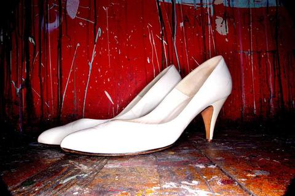
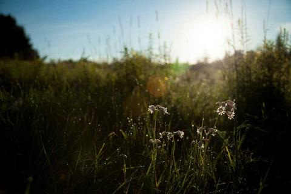

Hauser & Wirth Now Represents Ser Serpas, Fast-Rising Artist Who Combs the Detritus of Everyday Life
来源：ARTnews






Mohamed bin Zayed University of Artificial Intelligence Launches $250,000 Art Commission Program
来源：ARTnews

Supreme x The North Face 2026 秋季「Bones」联乘系列发布
来源：Hypebeast

Dyenamik 推出 XBOX 周年纪念系列
来源：Hypebeast

Gumtree Golf & Nature Club 推出「Down To Earth」别注系列
来源：Hypebeast

lululemon 推出多款冬季服饰
来源：Hypebeast

CASIO G-SHOCK 携手 HIDDEN.NY 推出限量版 2110HDN-8A
来源：Hypebeast
With MoMA, M+, and the Centre Pompidou’s Alliance, Museums Enter a New Era of Collaboration
来源：ARTnews
Nike 与高桥盾正式宣布 GYAKUSOU 归来
来源：Hypebeast
Timberland 携手 ALUMNI 以关羽脸谱为灵感打造联名 Moc Toe 鞋款
来源：Hypebeast
Labubu 如何避免成为下一个 BE@RBRICK？
来源：HB·POPMART
POP MART x UNIQLO UT 最新联名系列「The Monsters」发布
来源：HB·POPMART
THE MONSTERS 森林秘密基地登陆杭州嘉里中心
来源：HB·POPMART
POP MART 释出全新 MEGA SPACE MOLLY 1000% RX-78-2 高达特别版
来源：HB·POPMART
走进 POP MART 成都「炉火纯青·燃」特别活动
来源：HB·POPMART
KAWS:HOLIDAY 落地杭州西湖：30 米机器人 COMPANION 卧赏中秋月
来源：HB·KAWS
UNIQLO 携手 KAWS 发布全新 UT 系列「KAWS UNIVERSE」
来源：HB·KAWS
Browse the Top 200
来源：ARTnews
After the Museum
来源：Artforum
Read/Watch/Listen
来源：Artforum